Open Resilience Tools
The Fox’s Anvil is a commons-based workshop for tools that meet the world at the scale of land, water, emergency response, restoration, and community repair.
These are not products, wearables, dashboards, or toys. They are open designs and field paths for real work: flood and fire response, agroecology, local memory, mutual aid, infrastructure care, water-edge repair, and community resilience.
All designs shared here are meant to be built, repaired, adapted, tested, and improved by farmers, welders, mechanics, librarians, students, neighbors, volunteers, and communities willing to take responsibility for their use.
Tools in this Forge
-
Garden Raft · v0.1
A low-tech platform for working where land and water meet. Not primarily
a boat, but a mediating surface for garden tending, water-edge repair,
wetland observation, field learning, and community resilience.
water-edge repair -
The Spoovel · v0
A low-tech, field-repairable sack-filling and material-handling tool path.
The current v0 begins with a bag-holder, chute, and wheel-frame, then expands
only after testing against a hand-filled baseline.
material handling -
Signal Finder + CodeTape · v0.1
A commons seed for emergency signal-finding, paper-first communication,
local stewardship, offline community memory, and disaster response coordination.
local memory -
Rescue Thread Platform · v0.2
A working seed for establishing contact with trapped people when direct access
is unsafe, blocked, or impossible. Signal Finder locates; Rescue Thread reaches.
contact rescue -
Ocean Listening Network · v0.2
A story-rooted commons tool concept for listening to marine life, witnessing harm,
and helping communities respond without turning the ocean into another extracted dataset.
ocean witness -
Civic Care Commons · Child-Care Branch
A public resilience seed for treating child care as distributed civic
infrastructure: community-rooted, dignity-preserving, access-aware, and
held under strong safeguards.
care infrastructure -
Gofu · Commons Kitchen Offering
A small food commons seed for field kitchens, care spaces, school kitchens,
community gardens, and gatherings where nourishment is part of resilience.
commons food -
Additional tools
More tools will be added as they become clear enough to share, test, repair,
and responsibly steward in public.
emerging seeds
Garden Raft
Garden Raft is a low-tech commons module for water-edge work. It belongs here because it is not only a raft design. It is a way to give a person, a tool, and a living edge a stable place to meet.
The raft may support pond work, flooded gardens, wetland observation, floating nursery experiments, school field studies, irrigation-edge access, or habitat repair. Its first responsibility is not speed. Its first responsibility is stability, repairability, and care.
Repair before elegance.
A raft is a place to stand when the edge is changing.
The Spoovel
The Spoovel is a different kind of commons tool: not a signal flare, but an engineering path. It must earn each layer through measurement, field testing, repair, and repeatable use.
Its current path is:
Start with the v0 physical schematic and field test sheet before adding winches, conveyors, tie-off stations, CodeTape integration, Signal Finder coordination, or AI-assisted planning.
Signal Finder + CodeTape
Signal Finder + CodeTape is a commons seed for emergency communication and local memory. It begins not with a drone or dashboard, but with a simple question:
The first usable footpath is the paper tag system: eye-readable first, machine-readable second, human dignity always.
Open the Signal Finder + CodeTape page


Rescue Thread Platform
Rescue Thread belongs beside Signal Finder, but it is not the same tool. Signal Finder asks where the signal is. Rescue Thread asks how contact can be established once someone may be there.
Rescue Thread is a working seed for reaching trapped people when direct access is unsafe, blocked, unstable, or impossible. The core idea is a tethered signal line that can be felt, pulled, marked, followed, and answered. The line becomes a shared thread between the person trying to reach and the person waiting to be reached.
Its family placement is clear: Signal Finder is the sensing layer, CodeTape is the language layer, SignalTether is the contact layer, Spoovel is the deployment and interface layer, and AI support, if present, must remain a coordinator rather than a commander.
Ocean Listening Network
Ocean Listening Network is a story-rooted commons tool concept for listening to marine life, witnessing harm, and helping communities respond with care. It belongs in Fox’s Anvil because the listening ethic is not decoration. It is the design constraint.
The network may eventually include local listening stations, community witness logs, marine-life signal awareness, whale-safe alerts, and repair pathways that help people notice what is happening in the water without enclosing the knowledge in a distant platform.
This is not a dashboard for owning the sea. It is a threshold page for asking how communities might listen, respond, and remember with humility.
Civic Care Commons
Civic Care Commons is a living civic infrastructure seed. Its first branch focuses on child care: not as a private burden or corporate service, but as a distributed commons of care that helps children, families, caregivers, elders, and communities function with dignity.
The child-care branch asks how a community might use existing civic spaces, trained caregiver cores, rotating kitchens, libraries, parks, gardens, elders, guest teachers, and practical resource pathways to make care easier to give and easier to receive.
Need-responsive in care.
Money may enter. Control may not.
Gofu
Gofu is a commons kitchen offering: small, adaptable, plant-based, and designed to support care work wherever people gather, learn, recover, tend gardens, or share responsibility.
The first public version is a seed page, not a finished recipe standard. It asks how a simple preparation can be tested honestly, taught clearly, adapted locally, and shared without becoming a brand or product.
Feed real people.
Record what worked.
Record what failed.
Make the next batch easier to teach.
Relation to MythWear
MythWear Commons focuses on body-scale tools, garments, and movement companions. The Fox’s Anvil focuses on land-scale, water-edge, field-scale, and infrastructure-scale tools.
They are siblings: one close to the skin, one close to the ground.
License & Attribution
Commons materials: text, documentation, field notes, diagrams, and educational materials are shared under Creative Commons Attribution 4.0 International unless otherwise noted.
Code: site code, scripts, and software-like materials are shared under the MIT License unless otherwise noted.
No patents. No enclosure. No surveillance use. No extractive data capture. No proprietary dependency where avoidable. Keep local control, consent, repairability, and community stewardship at the center.
Attribution
Concept, stewardship, and originating frame: Jacobo Hernández Durbin / The Fox’s Anvil.
Developed with AI-assisted drafting and schematic support from Claude and ChatGPT / Elumannín, with human review, correction, and stewardship by Jacobo Hernández Durbin.
Suggested attribution line:
The Fox’s Anvil: Open Resilience Tools, by Jacobo Hernández Durbin.
Shared under CC BY 4.0 for documentation and MIT for code, unless otherwise noted.